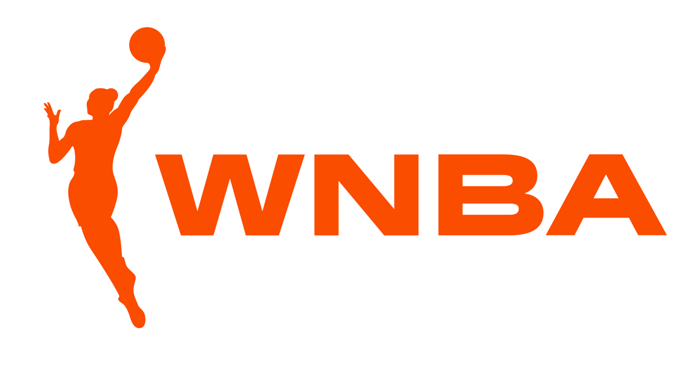

WNBA (Women's National Basketball Association)
|  |
|
A WNBA (Women's National Basketball Association) é a principal liga de basquete profissional feminino dos Estados Unidos. Fundada em 1996, a WNBA é composta por 12 equipes e oferece um ambiente competitivo para algumas das melhores jogadoras de basquete do mundo. A liga é conhecida por seu alto nível de habilidade e competição, com estrelas como Diana Taurasi, Sue Bird e Breanna Stewart, que elevaram o perfil do basquete feminino. A liga foi concebida para fornecer uma plataforma para as jogadoras de basquete feminino competirem profissionalmente, destacando seu talento e oferecendo oportunidades para que elas sigam carreiras no esporte. A WNBA desempenha um papel importante na promoção da igualdade de gênero no esporte e na sociedade em geral. Além de suas realizações esportivas, a liga se destaca por seu ativismo social, promovendo causas como igualdade de gênero e justiça racial. A WNBA é uma liga dinâmica que continua a crescer em popularidade e influência, contribuindo para o fortalecimento do esporte feminino e a defesa de questões sociais importantes. |